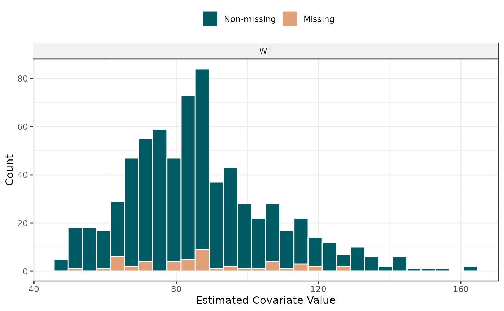
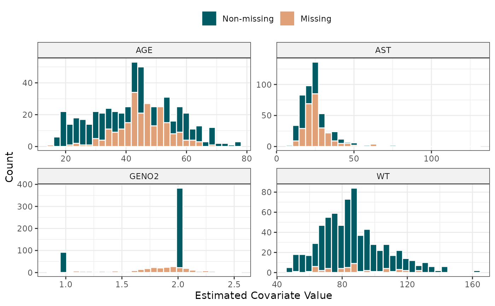

Plot the distribution of estimated FREM covariates by missingness
plotCovDist.RdGenerates diagnostic distribution plots (histograms or density plots) of the estimated covariates from a FREM model. The distributions are grouped and colored by whether the covariate was missing in the original clinical dataset. This helps evaluate if the model's empirical Bayes estimates for missing covariates map consistently to the observed cohort's marginal distribution.
Note: In FREM, all estimated covariates are continuous. Therefore, covariates that were originally binary/categorical will be plotted on a continuous scale.
Usage
plotCovDist(
df,
covNames,
plotType = c("histogram", "density"),
xlab = "Estimated Covariate Value",
ylab = "Count",
fillNonMissing = "#005B65",
fillMissing = "#E1A178",
colorOutline = "white",
alpha = 1,
bins = 30,
scales = "free_x",
nrow = NULL,
ncol = NULL,
...
)Arguments
- df
A data frame generated by
calcEtas(run withappendMissingFlags = TRUE).- covNames
A character vector specifying one or more covariates to plot (e.g.,
c("WT", "AGE")).- plotType
Character string specifying the geometry. Either
"histogram"(default) or"density". Note that density plots are scaled to show counts on the y-axis to match histograms.- xlab
Character string for the x-axis title. Defaults to
"Estimated Covariate Value".- ylab
Character string for the y-axis title. Defaults to
"Count".- fillNonMissing
Character string (hex code or color name) for the fill of non-missing data. Defaults to
"#005B65"(dark teal).- fillMissing
Character string (hex code or color name) for the fill of missing data. Defaults to
"#E1A178"(peach).- colorOutline
Character string for the outline of the geoms. Defaults to
"white".- alpha
Numeric. The transparency of the fills. Defaults to
0.6.- bins
Integer. Number of bins to use if
plotType = "histogram". Defaults to30.- scales
Character string to control axis scaling across facets. Options are
"fixed","free","free_x"(default), or"free_y".- nrow
Integer. Number of rows for the facet grid layout. Defaults to
NULL.- ncol
Integer. Number of columns for the facet grid layout. Defaults to
NULL.- ...
Additional arguments passed directly to
geom_histogram()orgeom_density()(e.g.,linewidth,bw).
See also
Other Diagnostics & Plotting:
calcEtas(),
calcFremShrinkage(),
fremParameterTable(),
getExplainedVar(),
getForestDFFREM(),
plotEtasCov(),
plotExplainedVar(),
traceplot()
Examples
library(PMXFrem)
library(ggplot2)
# 1. Prepare data and base model directories
model_dir <- system.file("extdata/SimNeb/", package = "PMXFrem")
data_path <- system.file("extdata/SimNeb/DAT-2-MI-PMX-2-onlyTYPE2-new.csv", package = "PMXFrem")
my_data <- read.csv(data_path)
my_data <- my_data[my_data$BLQ != 1, ]
# 2. Generate the individual ETAs and missingness flags
ind_params <- calcEtas(
modName = "run31",
modDevDir = model_dir,
numNonFREMThetas = 7,
numSkipOm = 2,
dataFile = my_data,
parNames = c("CL", "V", "MAT"),
appendMissingFlags = TRUE
)
# 3. Plot a single covariate distribution (Histogram)
p1 <- plotCovDist(ind_params, covNames = "WT")
print(p1)

# 4. Plot multiple covariates simultaneously (Density curves of counts)
# Forcing a 2-column layout
p2 <- plotCovDist(
df = ind_params,
covNames = c("WT", "AGE", "GENO2","AST"),
scales = "free",
ncol = 2
)
print(p2)
